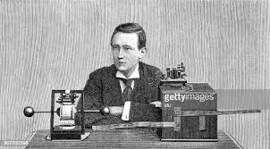

Proyecto basado en la vida de Guillermo Marconi
Datos personales
Marconi tenía un hermano (Alfonso Marconi) y un hermanastro, Luigi. Marconi trabó amistad con Charles van Raalte y su esposa Florence, los propietarios de la Isla Brownsland; y Margarita, su hija. En 1904 se encontró con su amiga, Beatrice O'Brien (1882-1976), hija de Edward O'Brien, 14.º Barón de Inchiquin. El 16 de marzo de 1905, Beatrice O'Brien y Marconi se casaron, y pasaron su luna de miel en la isla de Brownsland. Tuvieron 3 hijas, Degna (1908-1998), Gioia (1916-1996), y Lucia (nació y murió en 1906), y un hijo, Giulio, II marqués Marconi (1910-1971). En 1913, los Marconi volvieron a Italia y pasaron a ser parte de la sociedad romana. Beatrice sirvió como dama de compañía a la Reina Elena. Los Marconis se divorciaron en 1924 y, a petición de Marconi, el matrimonio fue anulado el 27 de abril de 1927, para que este pudiera volver a casarse. El 12 de junio de 1927 (religiosamente el 15 de junio), Marconi se casó con Cristina Bezzi-Scali (1900-1994). Juntos tuvieron una hija, Maria Elettra Elena Anna (nacida en 1930), quien se casaría con el príncipe Carlo Giovannelli (1942-2016) en 1966; aunque luego se divorciarían.
En 1923, Marconi fue uno de los primeros en unirse al Partido Fascista Italiano, convirtiéndose en un activo fascista y fiero defensor de su ideología y acciones tales como el ataque de las tropas italianas en Etiopía.
En su discurso de entrada al Partido afirmó: «Reivindico el honor de haber sido el primer fascista en la radiotelegrafía, el primero en reconocer la utilidad de unir los rayos eléctricos en un haz, como Mussolini ha reconocido por primera vez en el campo político la necesidad de reunir en un haz las sanas energías del País, por la mayor grandeza de Italia»
Marconi quiso presentar personalmente en 1931 la primera locución de radio de un Papa, Pío XI, y anunció en el micrófono: «Con la ayuda de Dios, quien coloca tantas fuerzas misteriosas de la naturaleza a la disposición del hombre, he sido capaz de preparar este instrumento el cual dará a los fieles de todo el mundo el gozo de escuchar la voz del Sagrado Padre»
